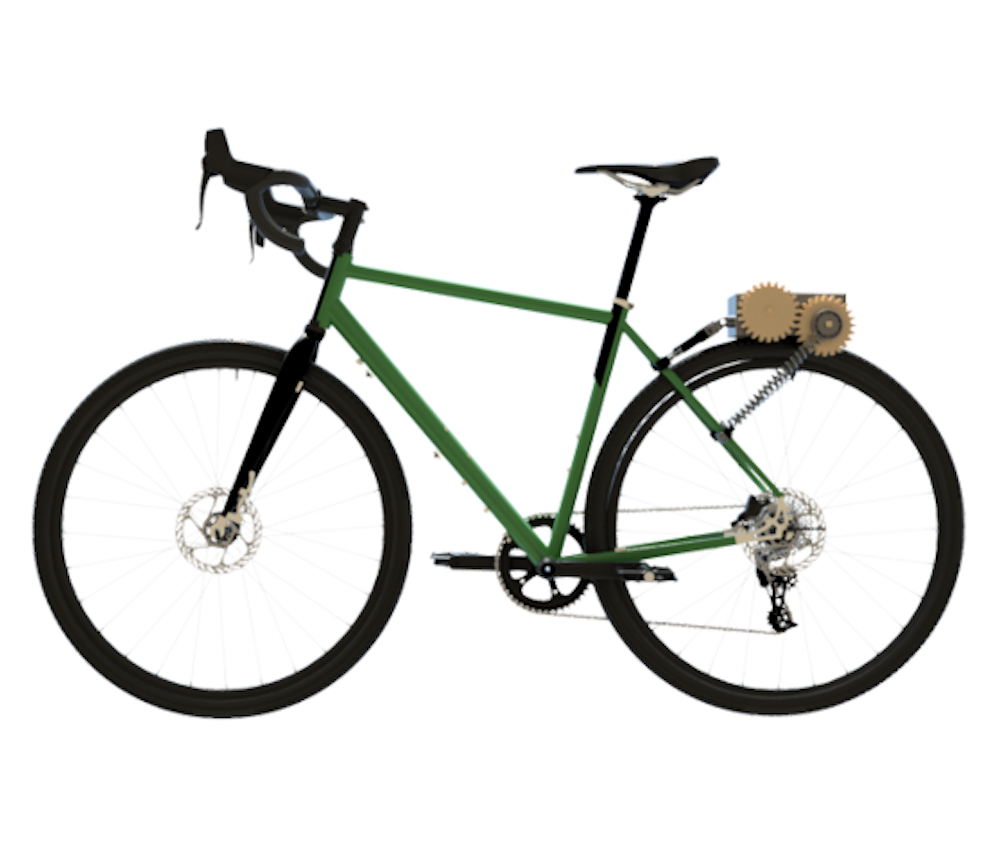

Webike: ebike conversion kit
This project introduces a cost-effective and user-friendly e-bike conversion kit designed to enhance the versatility of existing bicycles. The kit transforms conventional bikes into electric ones with ease, focusing on universality, safety, and affordability. It features a rear friction-drive system powered by a lightweight and durable drivetrain, engineered from recyclable materials such as aluminum and acrylic. With a simplified attachment mechanism requiring no specialized tools, the kit ensures compatibility with various bike types, all while maintaining compliance with UK e-bike regulations!